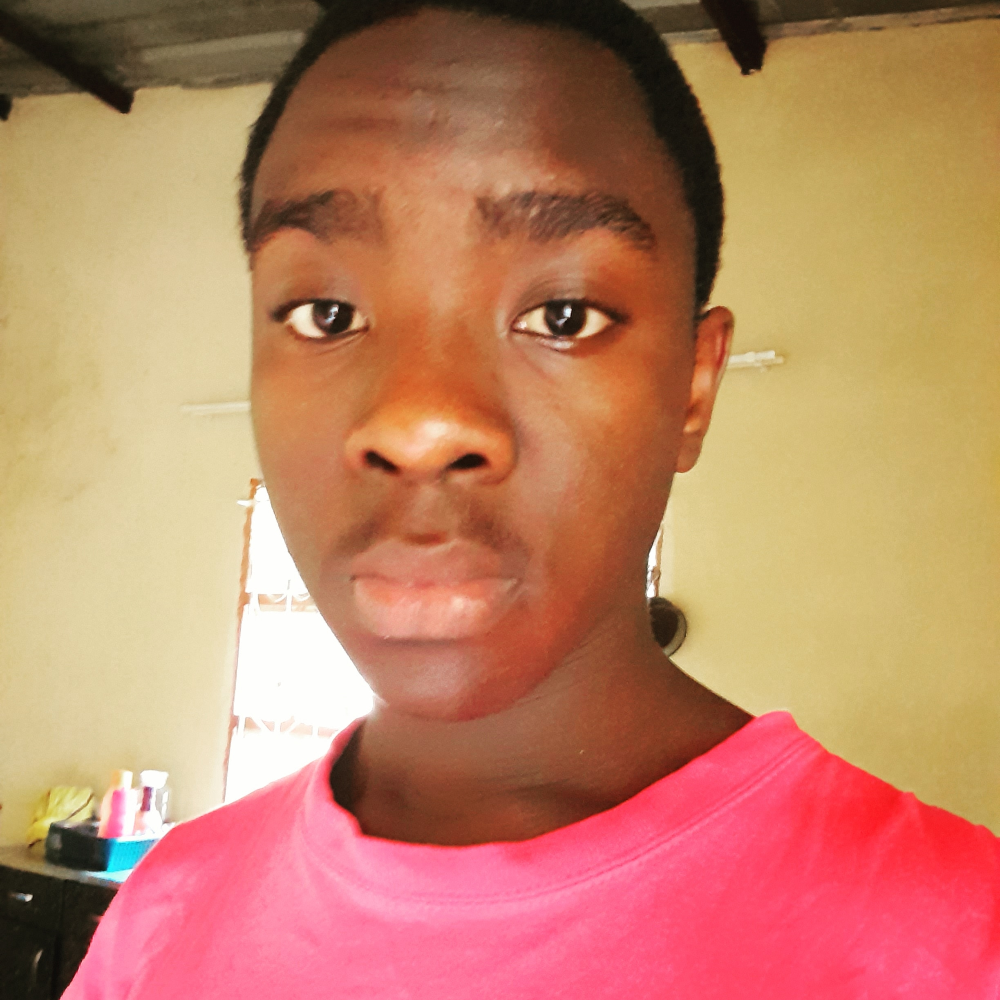
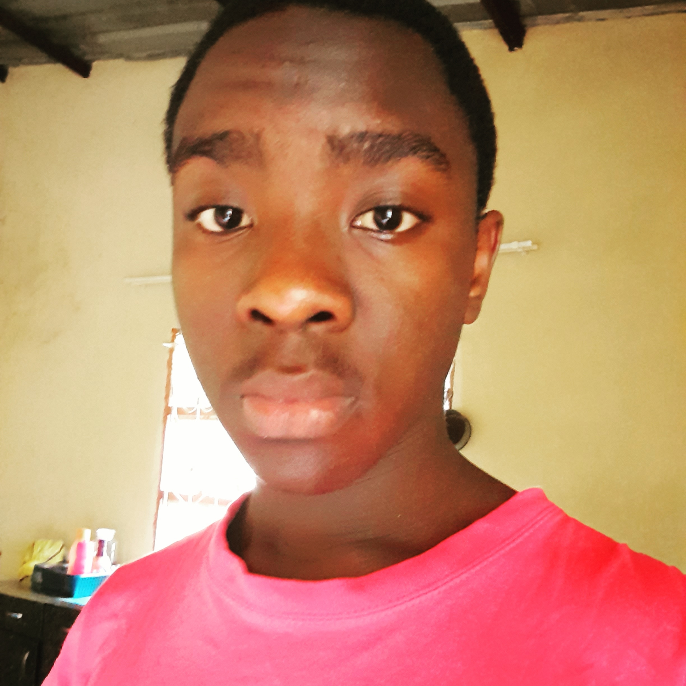

Olá, meu nome é José Zeito, também conhecido como Jozeito. Nos últimos dois anos, tenho me dedicado ao estudo do mundo da Engenharia de Software e programação, explorando desde conceitos básicos de Python até tópicos avançados como:
- Criação de páginas usando HTML.
- Estilização de páginas usando CSS.
- Criação de aplicações Web usando React e Angular.
- Estilização de páginas usando Bootstrap.
- Estilização de páginas usando TailWind.
- Criação de scripts usando JavaScript , Python, Typescript.
- Controle de Versão usando Git.
Durante esse período, concentrei-me especialmente no desenvolvimento Front-end.
Ao longo da minha jornada como desenvolvedor Front-end, mergulhei de cabeça na arte da codificação, aprimorando constantemente minhas habilidades em HTML, CSS e JavaScript .
Estou entusiasmado para compartilhar algumas das minhas criações mais recentes. Espero que este portfólio não só demonstre minha habilidade técnica, mas também reflita minha paixão pelo desenvolvimento web. Se você procura um desenvolvedor Front-end dedicado e criativo para colaborar em seu próximo projeto, estou pronto para fazer parte da sua equipe e transformar sua visão em uma realidade digital impressionante.
Vamos unir forças para criar experiências web memoráveis e impactantes!